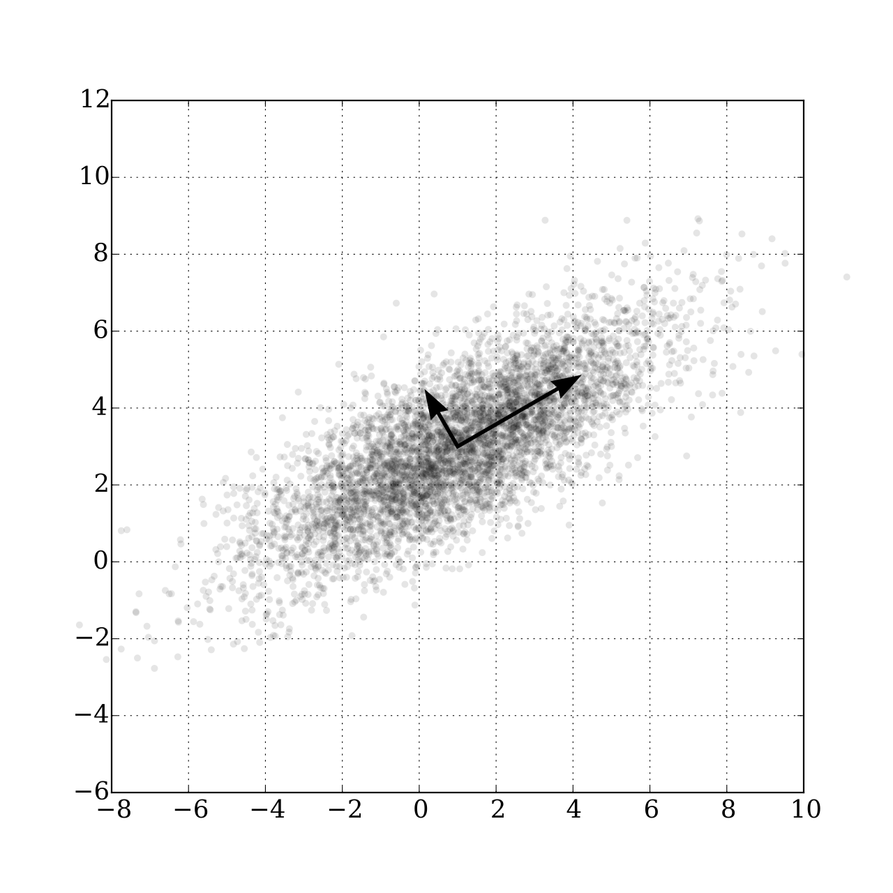

31 Factor Models
VARs are not parsimonious models. A VAR with \(n\) endogenous variables and \(p\) lags would have \(n^2p\) parameters to be estimated. With more variables included in the model, the degree of freedom is quickly exhausted. On the other hand, in many applications, we would want to include more variables into the model. The economy is complex and the endogenous variables are huge. Also, including more variables would mitigate the omitted variable problem that would lead to more credible identification. To tackle the “big data” challenge, we would need some dimension reduction technology.
31.1 Principle Component Analysis
Question: how to summarize the movements of a large number of time series with fewer time series?
The native approach is to take the average after some standardization. A better approach is to find a linear combination of them such that:
- The 1st linear combination captures most of the variances among the series;
- The 2nd linear combination, while being orthogonal to the 1st one, captures most of the remaining variations;
- …
To formulate the question mathematically, let \(X = [x_1\ x_2\ \dots\ x_p]'\) represent \(p\) time series. In the form of data matrix
\[ X = \begin{bmatrix} x_{11} & x_{21} & \dots & x_{p1} \\ x_{12} & x_{22} & \dots & x_{p2} \\ \vdots & \vdots & \ddots & \vdots \\ x_{1T} & x_{2T} & \dots & x_{pT} \\ \end{bmatrix}_{T \times p} \]
We want to find a linear combination of \(X\):
\[ a'X = a_1x_1 + a_2x_2 + \dots + a_px_p \]
such that \(a'X\) captures the greatest variance. If \(X\) is a 2-dimensional vector \(X=[x_1\ x_2]'\). We want to find a vector \([a_1\ a_2]\) such that projecting the data onto this direction gives the largest variance.

Expressed as an optimization problem, we want to solve
\[ \max_a \mathbb{E}(a'XX'a) \]
where we normalize \(a\) to a unit vector \(a'a=1\). Define the Lagrangian
\[ \mathcal{L} = a'\Sigma a - \lambda_1 (a'a-1) \]
where \(\Sigma=\mathbb{E}(XX')\). The first-order condition gives
\[ \frac{\partial\mathcal{L}}{\partial a} = 2\Sigma a - 2\lambda_1 a =0 \implies \Sigma a = \lambda_1 a \]
This means, \(a\) is an eigenvector of \(\Sigma\). The linear combination has variance
\[ a'\Sigma a = a'\lambda_1 a= \lambda_1 a'a = \lambda_1 \]
which is the eigenvalue. So, if we choose \(a\) to be the eigenvector associated with the largest eigenvalue of the covariance matrix \(\Sigma\) and project the data onto it, the projected variance will be maximized. The eigenvector points to the direction that the components of \(X\) co-variate the most. It is called the first principle component.
If we want a second principle component that points to the direction that the data co-variate second to the most, by similar reasoning, we pick the second largest eigenvalue \(\lambda_2\):
\[ \Sigma b = \lambda_2 b \]
Then \(b\) is the second principle component. Since \(\Sigma\) is symmetric, we know that the eigenvectors are orthogonal, \(b\perp a\).
\[ \begin{aligned} &\lambda_1 a'b = (\lambda_1a)'b = (\Sigma a)'b = a'\Sigma'b = a'\Sigma b = a'\lambda_2b=\lambda_2 a'b \\[1em] &\implies (\lambda_1 -\lambda_2) a'b=0 \end{aligned} \]
Since \(\lambda_1\neq\lambda_2\), we have \(a'b=0\).
The transformed matrix \(Y\) is the reduced-dimension dataset \(k << n\) that captures as much variance as possible of the original dataset. One of the drawbacks of PCA is that the principle components do not have an economic meaning. We do not know how to interpret the principle components except that they represents the co-movements among the original variables. If we want a clear meaning of the principle components, it is suggested we group the original dataset by categories and extract principle components for each category. For example, if we put all price indexes in a group and the principle components of that group would likely be interpreted as the most representative price movement.
31.2 Factor-augmented VAR
Standard VAR assumes the “shocks” are identified by the VAR residuals after imposing some restriction. However, due to the “curse of dimensionality”, standard VAR can only include a limited number of variables. Three problems would arise because of that:
- Small number of variables is unlikely to span the space of structural shocks. For example, in the application of identifying monetary policy shocks, if the information set used by the central bank is not fully captured by the VAR, the residuals would not span the space of structural shocks.
- It is questionable that specific observable measures correspond precisely to the theoretical constructs. For example, the concept of “economic activity” may not be precisely represented by GDP.
- Standard VAR can only generate a limited number of impulse responses that we care about. In many applications, we would care about a wide range of impulse responses from various aspects of the economy.
One solution is to augment a standard VAR with a few principle components (factors) estimated from big dataset. A factor-augmented VAR (FAVAR) is specified as follows:
\[ \begin{aligned} X_t &= \Lambda^f f_t + \Lambda^y y_t + u_t \\[1em] \begin{bmatrix}f_t \\ y_t\end{bmatrix} &= \Phi(L) \begin{bmatrix}f_{t-1} \\ y_{t-1}\end{bmatrix} + v_t \end{aligned} \]
where \(X_t\) is an \(n \times 1\) vector representing the information set, which is assumed to be spanned by \(k \times 1\) factors and \(m \times 1\) observable measures. \(\Lambda^f\) is called the factor loading matrix. We assume the factors and observables follow a vector autoregressive process.
We follow a two-step procedure to estimate the FAVAR:
- Estimate the factors by principle components of \(X_t\), denoted by \(\hat C_t\). \(\hat F_t\) is the part of \(\hat C_t\) not spanned by \(y_t\).
- Estimate the FAVAR with the factors \(\hat F_t\). Apply identification similar to standard VARs.
We use the example of Bernanke et al. (2005) as an illustration, in which the authors use an FAVAR to identify the impact of US monetary policy shocks. They treat only the Fed’s policy instrument \(r_t\) as observed, all other variables including output and inflation, as unobserved (captured by \(f_t\)). They adopt a “slow-r-fast” identification scheme:
| Slow-moving variables \(x_t^S\) | Policy instrument \(r_t\) | Fast-moving variables \(x_t^F\) |
|---|---|---|
Output Employment Inflation …… |
Fed fund rate | Asset price Financial shocks News shocks …… |
The FAVAR is specified as
\[ \begin{aligned} \begin{bmatrix}x_t^S \\ x_t^F\end{bmatrix} &= \begin{bmatrix}\Lambda_{SS} & 0 & 0 \\ \Lambda_{FS} & \Lambda_{FR} & \Lambda_{FF} \end{bmatrix} \begin{bmatrix}f_t^S \\ r_t \\ f_t^F\end{bmatrix} + u_t \\ \Phi(L)&\begin{bmatrix}f_t^S \\ r_t \\ f_t^F\end{bmatrix} = \begin{bmatrix}\eta_t^S \\ \eta_t^R \\ \eta_t^F\end{bmatrix} \end{aligned} \]
with recursive identification
\[ \begin{bmatrix}\eta_t^S \\ \eta_t^R \\ \eta_t^F\end{bmatrix} = \begin{bmatrix} H_{SS} & 0 & 0 \\ H_{RS} & 1 & 0 \\ H_{FS} & H_{FR} & H_{FF} \end{bmatrix} \begin{bmatrix}\epsilon_t^S \\ \epsilon_t^R \\ \epsilon_t^F\end{bmatrix}. \]
The IRFs for every variable in \(X_t\) can be constructed with the factor loading matrix. FEVDs follow immediately from the coefficients of the MA representation of the VAR system and the variance of the structural shocks.
Bernanke et al. (2005) finds adding the unobserved factors change the result dramatically. The IRF from a standard VAR exhibits the so-called “price puzzle”, that is inflation does not drop immediately after a tightening monetary policy shock. The FAVAR reduces the price puzzle significantly, which indicates the FAVAR indeed incorporates useful information that is missing in standard VARs.